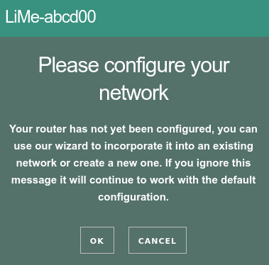

config lime 'wifi'
# other options
option distance_2ghz '300'LibreMesh has a configuration system based on the following principles:
Be simple to configure and understand what configurations are in use in each node
Based on the idea of shared configurations at Community level with possible customizations per Node
Maintainable over time, by firmware updates, adding new nodes in the community, etc.
To be able to make complex configurations.
The configuration system is fundamental to understand the internal functioning of LibreMesh, however it is not necessary to understand it before starting a LibreMesh network!
If your community wants to deploy a free geek network it is advisable to do so using the lime-app using the FirstBootWizard. This application simplifies the initial configuration of the nodes and allows new nodes to join an existing network, all through a user-friendly interface which does not require prior knowledge of networks.
To use the FirstBootWizard simply follow the steps on the screen when enter http://thisnode.info

However, if your community is a geek community, then you may not want to use the FirstBootWizard.
Once the network is started using the FBW, the participants can perform some
configuration changes through the lime-app.
As needs arise in the community that are not currently met by the
lime-app network participants will be able to learn how to make these changes through ssh
or other tools and following the documentation below.
LibreMesh uses UCI as its
configuration, so does OpenWrt.
UCI is a database that is
easily modified both from the command line and by editing the configuration files directly
All UCI configuration files are located in the /etc/config/ directory.
The LibreMesh configuration files that can be edited for are: /etc/config/lime-node and
/etc/config/lime-community
All other configuration files should not be modified.
To help the community maintain its configs, the configuration of the network nodes is structured hierarchically on 3 levels:
Node, /etc/config/lime-node file
Community, /etc/config/lime-community file
Default, /etc/config/lime-defaults file
Where the configuration made at the Node level takes priority over the Community and the latter has priority over the Default. This way, when most of the nodes share a certain characteristic, it is convenient be configured at the community level and only modified at the Node level in the nodes where that configuration differs. The Default level contains all configuration values at their default value.
Let’s suppose that we want to set the maximum wireless distance from the 2.4GHz nodes in the community in 300 meters but in two of the nodes A and B configure it in 1000m. We could do it in the following way:
In the lime-community of all the nodes we would have
config lime 'wifi'
# other options
option distance_2ghz '300'And in the lime-node files of nodes A and B:
config lime 'wifi'
option distance_2ghz '1000'When running the lime-config command the first thing that happens is that the Node levels are processed,
Community and Default and the /etc/config/lime-autogen file is generated.
This file is the one that contains the configuration that is really going to be used by libremesh to configure the system.
The resulting configuration files are then written for each package based on /etc/config/lime-autogen.
For the settings to be applied, it is recommended to run reboot after lime-config. While there are faster ways
of applying the modifications in certain cases, running reboot is the only way to ensure that all changes were applied.
The configuration is divided into three main sections: system, network and wifi.
For detailed and updated information on all options see the updated reference in /docs/lime-example.
The following options in the system section are the most relevant:
config lime system option hostname 'LiMe-%M4%M5%M6' option domain 'thisnode.info'
We suggest you change the domain thisnode.info to a new subdomain of your community site, for example option domain mesh.altermundi.net. This domain (mesh.altermundi.net) should be a domain that does not already exist outside the network (i.e. it is a bad idea to use altermundi.net). All clients that get an IP address by DHCP and all network nodes will be assigned a fully qualified domain (e.g. lime-ddeeff.mesh.altermundi.net)
General network configurations
Of all the network options, the following are the most relevant
config lime network option primary_interface 'eth0' option main_ipv4_address '10.%N1.0.0/16' option main_ipv6_address '2a00:1508:0a%N1:%N200::/64' list protocols ieee80211s list protocols lan list protocols anygw list protocols batadv:%N1
IPv4 configuration: main_ipv4_address
|
There are four possibilities:
set a static IP and subnet, e.g. '192.0.2.1/16'
parameterize with %Mn and %Nn, and configure the subnet, for example '192.%N1.%M5.%M6/16'.
configure a network address (not a specific IP) to obtain an auto-complete IP
within the network from the bits of the MAC. This also works with masks other than
/24 or /16 as in '192.0.128.0/17'.
set two different parameters, the first for the subnet and the second for the IP setting,
for example '192.0.128.0/16/17', resulting in a /16 subnet with broadcast domain (192.0.0.0/16) but with the IP of the node
calculated in a /17 range (from 192.0.128.0 to 192.0.255.254).
|
IPv6 configuration:
main_ipv6_addressThe configuration is similar to the |
|
List of protocols
List of protocols configured by LibreMesh. Some of these require the installation of your related package |
Of all the network options, the following are the most relevant
config lime wifi
option channel_2ghz '11'
list channel_5ghz '48'
list channel_5ghz '157'
option distance_2ghz '100'
option distance_5ghz '1000'
list modes 'ap'
list modes 'apname'
list modes 'ieee80211s'
option ap_ssid 'LibreMesh.org'
option apname_ssid 'LibreMesh.org/%H'
option country 'ES'
|
Country setting:
country codeThe default country code is not specified (so the default is usually |
|
distance
The |
|
wifi options
Any options in the form |
|
wifi Access point password
To secure the AP and APname interfaces with WPA2-PSK, add the |
Changing the above options allows us to have a configuration of the whole system.
In cases where different network interfaces must have different configurations, see /docs/lime-example.
Some options are parameterizable using a set of special characters that will be replaced by node-specific information.
MAC bytes %Mn refers to the n byte of the MAC address of the main interface.
For example from the MAC CA:FF:EE:BA:BB:EE %M1 will be replaced by CA (the first byte of the MAC)
and %M4 by BA (the fourth byte of the MAC).
Network Identifier %Nn refers to the n byte of the cloud identifier which is a hash that is calculated
from the SSID of the AP (taken from the content of option ap_ssid ...).
Hostname %H refers to the hostname of the node.
If you want to make a configuration for which LibreMesh does not have an option then it is necessary to use generic configs and _lime-assets.
generic_uci_configOther files can be configured in /etc/config/ from the lime configuration files using
generic configurations.
Example to configure the location of /etc/config/libremap from /etc/config/lime-community:
config generic_uci_config libremap
list uci_set "libremap.settings=libremap"
list uci_set "libremap.settings.community=our.libre.org"
list uci_set "libremap.settings.community_lat=-200.123"
list uci_set "libremap.settings.community_lon=500.9"The lime-assets are files that allow you to make special configurations. These files are divided into two groups, those of the node and those of the community. The idea is that the assets of the community are shared by all the nodes and allow configurations that are necessary in all the nodes. On the other hand, the files (assets) of the node are designed to make specific configurations in the node.
copy_assetIf a file is required to be present on the file system you can use the copy_asset directive.
copy_asset copies a file from the assets directory to a path defined by the dst option.
For example to configure the collectd program for your community you can create a collectd.conf file.
in /etc/lime-assets/community/collectd.conf and use it by defining the following settings in the file
lime-community in the following way:
config copy_asset collectd
option asset 'community/collectd.conf'
option dst '/etc/collectd.conf'run_assetTo configure LibreMesh to run a script you should use the run_asset option.
Use this configuration method as a last resort if the other methods are not sufficient.
Run_asset` runs a script from the assets directory. The execution can be in the first boot
(that is, when it starts after a firmware upgrade) using ATFIRSTBOOT or in every
once you reconfigure LibreMesh (when you run lime-config) using ATCONFIG.
For example to run the script myscript.sh saved in /etc/lime-assets/community/myscript.sh
on the first boot:
config run_asset a_test_script
option asset 'community/myscript.sh'
option when 'ATFIRSTBOOT'|
This configuration method replaces the functionality of the |
The configuration of a libremesh node should only be done through the libremesh configuration files and never by directly editing the other configuration files. This is because changes made to configuration files outside the freemesh settings can be lost when
a change is made to the libremesh configuration
a firmware upgrade is made
Although it might be convenient to directly modify /etc/config/lime-defaults or even
This should not be done because in the future when we want to understand
the configuration that we have of the node we will not be able to distinguish if we change a configuration or not.
In the Node configuration: /etc/config/lime-node
No, the configurations by the Default level provide a configuration that allows you to have a mesh network experience without having to change anything
This is why there are Generic configurations and lime-assets
How to use the ap, apnode, mesh settings
How to put a radio as a client of another network (so that the node acts as a gateway)
How to set an administration password for the whole network
How to password protect the wireless
For detailed information on these questions you can see the examples in /docs/lime-example.